if (!require(pacman)) install.packages("pacman")p_load(tidyverse, broom, modelsummary, ggdag, dagitty)
Multiple regression, partialling out a control variable, and choosing controls with causal graphs
Next to broom and modelsummary from Week 4, we load ggdag, which draws causal graphs with ggplot2, and dagitty, which reads them.
if (!require(pacman)) install.packages("pacman")p_load(tidyverse, broom, modelsummary, ggdag, dagitty)Week 4 fitted regression lines with a single predictor. One predictor mixes its own relationship with the outcome with everything else it goes along with. Today we add a second predictor to hold such a difference constant, and use causal graphs to decide which variables belong in the model.
With predictors, the linear model becomes:
OLS works as before: it picks the coefficients that minimize the sum of squared residuals.
Each slope is the average change in for a one-unit increase in , holding all other predictors constant. That last part is what statistical control means.
The GERDA counties from Week 4 again. As in Week 3, Berlin (state code 11) is left out, since its East/West split doesn’t map onto a single county. New is a dummy variable east: 1 for the counties of the former GDR, 0 for the West.
gerda <- read_csv("data/federal_cty_harm.csv")east_codes <- c("12", "13", "14", "15", "16")
counties <- gerda |>
filter(
election_year == 2025,
state != "11"
) |>
mutate(
density = population / area,
east = if_else(state %in% east_codes, 1, 0),
region = if_else(east == 1, "East", "West")
) |>
select(
county_code, state, east, region,
cdu_csu, spd, greens = gruene, fdp, linke = linke_pds, afd, bsw,
turnout, density
) |>
mutate(across(cdu_csu:turnout, ~ .x * 100))
counties# A tibble: 399 x 13
county_code state east region cdu_csu spd greens fdp linke afd bsw turnout density
<chr> <chr> <dbl> <chr> <dbl> <dbl> <dbl> <dbl> <dbl> <dbl> <dbl> <dbl> <dbl>
1 01001 01 0 West 17.4 15.7 20.6 3.30 12.9 13.8 3.33 79.4 1606.
2 01002 01 0 West 18.7 19.3 23.1 3.83 14.4 10.9 3.36 82.5 2075.
3 01003 01 0 West 21.9 21.4 18.3 3.79 10.9 15.3 3.78 79.5 1010.
4 01004 01 0 West 25.3 19.6 10.5 4.14 8.06 22.3 4.62 76.2 1109.
5 01051 01 0 West 30.3 17.7 9.15 5.51 6.10 21.1 3.51 82.1 93.8
6 01053 01 0 West 28.8 18.5 13.2 5.07 7.12 19.1 3.80 84.1 159.
7 01054 01 0 West 29.1 17.3 13.4 4.80 6.17 14.5 3.04 83.2 80.4
8 01055 01 0 West 31.2 19.9 12.6 5.16 5.92 17.6 3.09 82.9 145.
9 01056 01 0 West 28.9 20.2 14.5 5.06 7.57 15.6 3.57 84.6 479.
10 01057 01 0 West 29.9 19.2 16.0 4.32 6.27 15.7 3.03 86.2 120.
# i 389 more rowscounties |>
count(region)# A tibble: 2 x 2
region n
<chr> <int>
1 East 75
2 West 324One color per region, used in every plot below:
region_colors <- c(
"West" = course_primary,
"East" = "darkorange"
)Does the AfD do better where fewer people vote? AfD share is our  , turnout our
, turnout our  :
:
counties |>
ggplot(aes(x = turnout, y = afd)) +
geom_point(alpha = 0.4) +
labs(
title = "AfD vote share vs. turnout by county, 2025",
x = "Turnout (%)",
y = "AfD vote share (%)"
) +
theme_intror()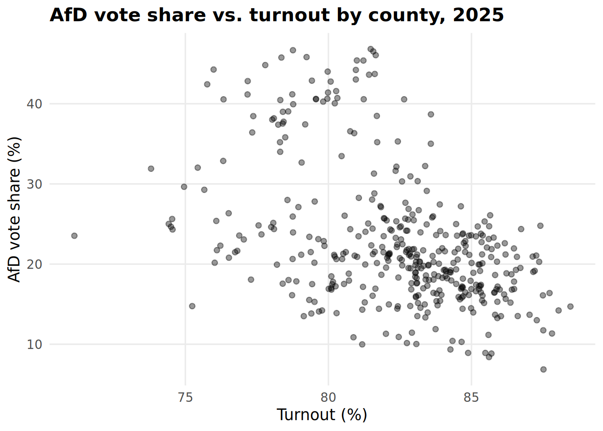
bivariate_model <- lm(afd ~ turnout, data = counties)
bivariate_model |>
tidy()# A tibble: 2 x 5
term estimate std.error statistic p.value
<chr> <dbl> <dbl> <dbl> <dbl>
1 (Intercept) 131. 10.4 12.7 0.000000000000000000000000000000319
2 turnout -1.32 0.126 -10.5 0.0000000000000000000000665 bivariate_beta_0 <- bivariate_model |>
tidy() |>
filter(term == "(Intercept)") |>
pull(estimate)
bivariate_beta_1 <- bivariate_model |>
tidy() |>
filter(term == "turnout") |>
pull(estimate)
bivariate_beta_0[1] 131.4466bivariate_beta_1[1] -1.318618One percentage point more turnout goes along with 1.32 points less AfD support. Coloring the same points by region shows two separate clouds:
counties |>
ggplot(aes(x = turnout, y = afd, color = region)) +
geom_point(alpha = 0.6) +
geom_abline(
intercept = bivariate_beta_0,
slope = bivariate_beta_1,
linetype = "dashed"
) +
scale_color_manual(values = region_colors) +
labs(
title = "AfD vote share vs. turnout by region, 2025",
x = "Turnout (%)",
y = "AfD vote share (%)",
color = NULL
) +
theme_intror()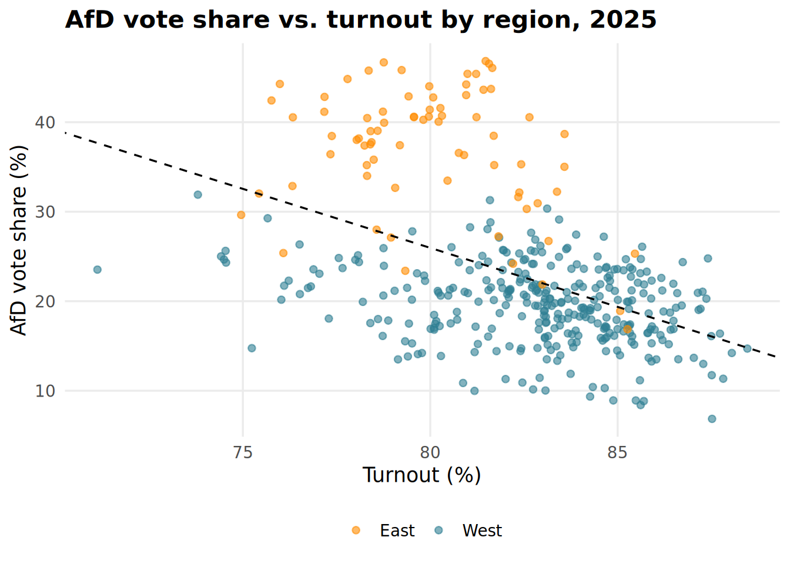
Eastern counties have lower turnout and much higher AfD shares. Within each region, the slope looks flatter than the dashed line through all counties. The region means:
region_means <- counties |>
group_by(region) |>
summarize(
mean_afd = mean(afd),
mean_turnout = mean(turnout)
)
region_means# A tibble: 2 x 3
region mean_afd mean_turnout
<chr> <dbl> <dbl>
1 East 37.1 80.0
2 West 19.5 82.9How much of the turnout slope is left once we hold the region constant? Following the lecture, we purge east out of both variables and then regress what’s left on each other, in three steps.
Venn diagrams help to follow along. Each circle stands for how much one variable differs from county to county. Where two circles overlap, knowing one variable helps to predict the other: the bigger the overlap, the better the prediction. Whatever lies outside all other circles, none of them can predict:
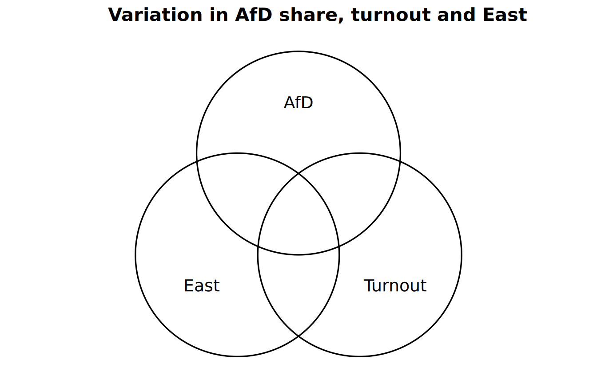
The same for turnout:
turnout_east_model <- lm(turnout ~ east, data = counties)
turnout_east_model |>
tidy()# A tibble: 2 x 5
term estimate std.error statistic p.value
<chr> <dbl> <dbl> <dbl> <dbl>
1 (Intercept) 82.9 0.154 539. 0
2 east -2.95 0.355 -8.31 0.00000000000000158This time the blue overlap is the variation in turnout that east explains:
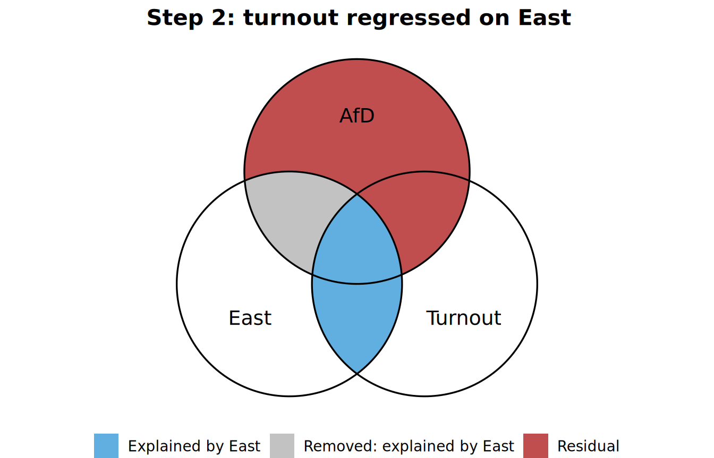
partialled <- turnout_east_model |>
augment(data = partialled) |>
select(county_code, region, afd, turnout, afd_resid, turnout_resid = .resid)
partialled# A tibble: 399 x 6
county_code region afd turnout afd_resid turnout_resid
<chr> <chr> <dbl> <dbl> <dbl> <dbl>
1 01001 West 13.8 79.4 -5.71 -3.52
2 01002 West 10.9 82.5 -8.64 -0.461
3 01003 West 15.3 79.5 -4.26 -3.40
4 01004 West 22.3 76.2 2.75 -6.69
5 01051 West 21.1 82.1 1.53 -0.829
6 01053 West 19.1 84.1 -0.445 1.19
7 01054 West 14.5 83.2 -5.00 0.298
8 01055 West 17.6 82.9 -1.93 -0.0130
9 01056 West 15.6 84.6 -3.94 1.68
10 01057 West 15.7 86.2 -3.89 3.28
# i 389 more rowsturnout_resid is the turnout circle without the East circle. Both residuals together:
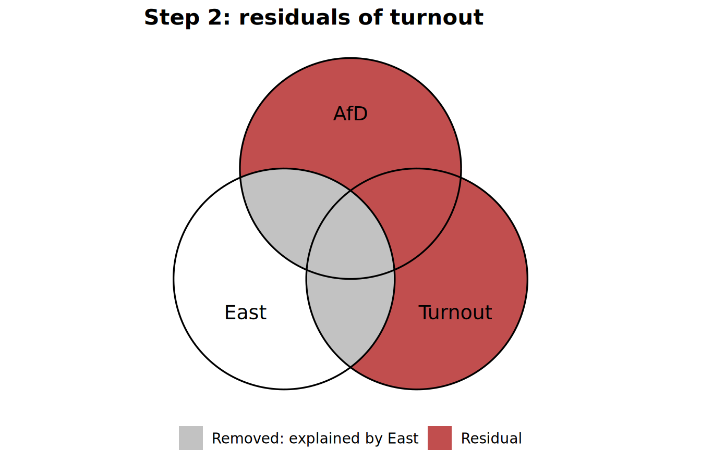
Both residual columns are now free of the East-West difference. With the region means subtracted, the two clouds sit on top of each other. Next to the original data from above, each with a dashed OLS fit through all counties:
original_panel <- partialled |>
mutate(
panel = "Original",
x = turnout,
y = afd
)
residual_panel <- partialled |>
mutate(
panel = "East-West difference removed",
x = turnout_resid,
y = afd_resid
)
partialled_panels <- bind_rows(original_panel, residual_panel) |>
mutate(panel = factor(panel, levels = c("Original", "East-West difference removed")))partialled_panels |>
ggplot(aes(x = x, y = y)) +
geom_point(aes(color = region), alpha = 0.6) +
geom_smooth(
method = "lm",
formula = y ~ x,
se = FALSE,
color = "black",
linetype = "dashed"
) +
facet_wrap(~ panel, scales = "free") +
scale_color_manual(values = region_colors) +
labs(
title = "AfD vs. turnout, before and after removing East",
x = "Turnout (percentage points)",
y = "AfD share (percentage points)",
color = NULL
) +
theme_intror()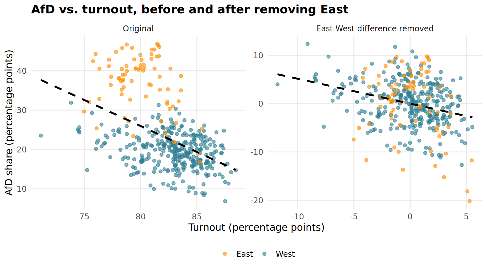
Regressing one residual on the other uses only the purple part: the variation AfD share and turnout have in common outside the East circle. That is the turnout slope with east held constant:
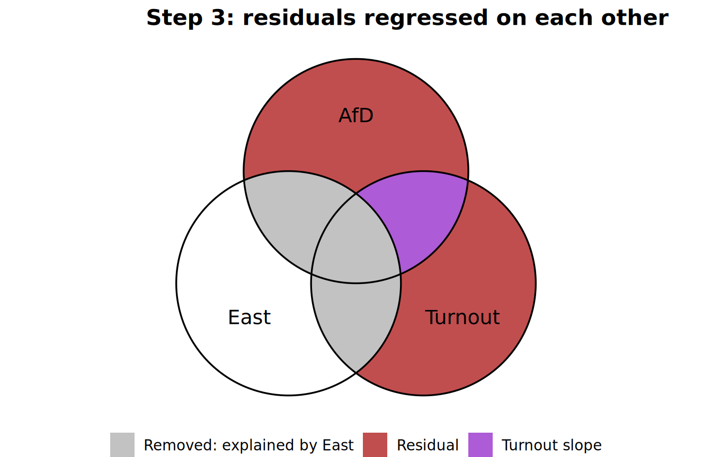
partialled_model <- lm(afd_resid ~ turnout_resid, data = partialled)
partialled_model |>
tidy()# A tibble: 2 x 5
term estimate std.error statistic p.value
<chr> <dbl> <dbl> <dbl> <dbl>
1 (Intercept) -0.0000000000000121 0.240 -0.0000000000000506 1.000
2 turnout_resid -0.514 0.0868 -5.93 0.00000000660partialled_beta_1 <- partialled_model |>
tidy() |>
filter(term == "turnout_resid") |>
pull(estimate)
partialled_beta_1[1] -0.5144773The slope dropped from -1.32 to -0.51. Most of the bivariate relationship was the East-West difference in both variables.
lm()lm() does all three steps at once: add the control with + in the formula.
control_model <- lm(afd ~ turnout + east, data = counties)
control_model |>
tidy()# A tibble: 3 x 5
term estimate std.error statistic p.value
<chr> <dbl> <dbl> <dbl> <dbl>
1 (Intercept) 62.2 7.21 8.63 1.51e-16
2 turnout -0.514 0.0869 -5.92 6.90e- 9
3 east 16.0 0.665 24.1 1.80e-79control_beta_0 <- control_model |>
tidy() |>
filter(term == "(Intercept)") |>
pull(estimate)
control_beta_1 <- control_model |>
tidy() |>
filter(term == "turnout") |>
pull(estimate)
control_beta_2 <- control_model |>
tidy() |>
filter(term == "east") |>
pull(estimate)
control_beta_0[1] 62.20589control_beta_1[1] -0.5144773control_beta_2[1] 16.00378The turnout slope is exactly the one from the three steps. In the Venn diagram, lm() credits each coefficient only with what that predictor predicts on its own. The part of AfD support that turnout and East predict together goes to neither coefficient:
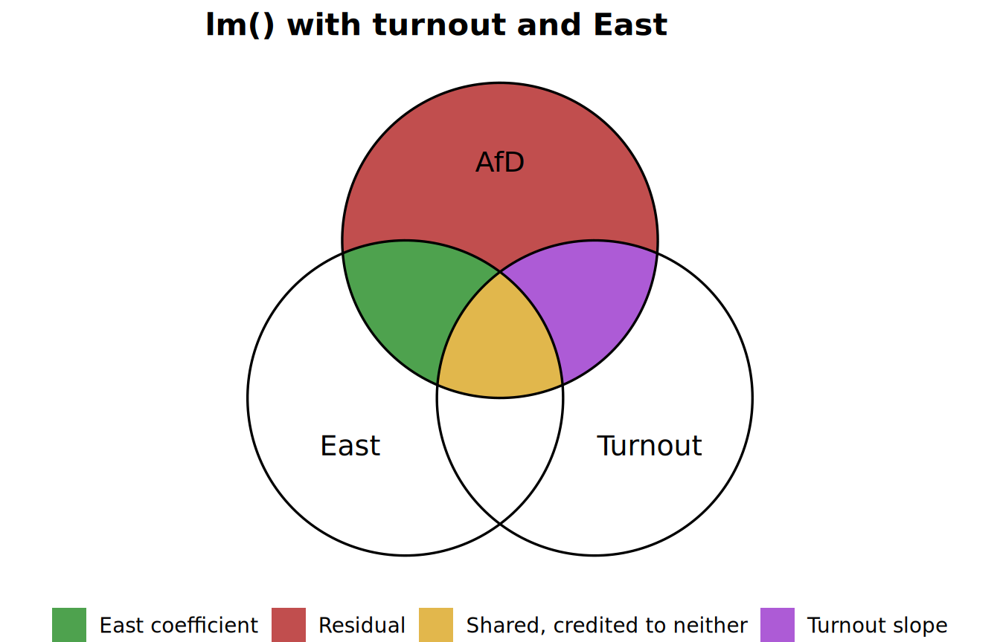
Both ways give the same turnout slope:
tibble(
three_steps = partialled_beta_1,
lm = control_beta_1
)# A tibble: 1 x 2
three_steps lm
<dbl> <dbl>
1 -0.514 -0.514A dummy is an indicator: it is 1 if a condition holds and 0 otherwise. Written with the indicator function , the fitted model reads:
So a dummy shifts the intercept. Plugging in both values gives one line per region, with the same slope:
At the same turnout, an Eastern county is predicted to vote 16 points more AfD. augment() draws both lines, next to the dashed bivariate one:
control_fit <- control_model |>
augment(data = counties)control_fit |>
ggplot(aes(x = turnout, color = region)) +
geom_point(aes(y = afd), alpha = 0.5) +
geom_line(aes(y = .fitted), linewidth = 1) +
geom_abline(
intercept = bivariate_beta_0,
slope = bivariate_beta_1,
linetype = "dashed"
) +
scale_color_manual(values = region_colors) +
labs(
title = "AfD vote share and turnout, controlling for East",
x = "Turnout (%)",
y = "AfD vote share (%)",
color = NULL
) +
theme_intror()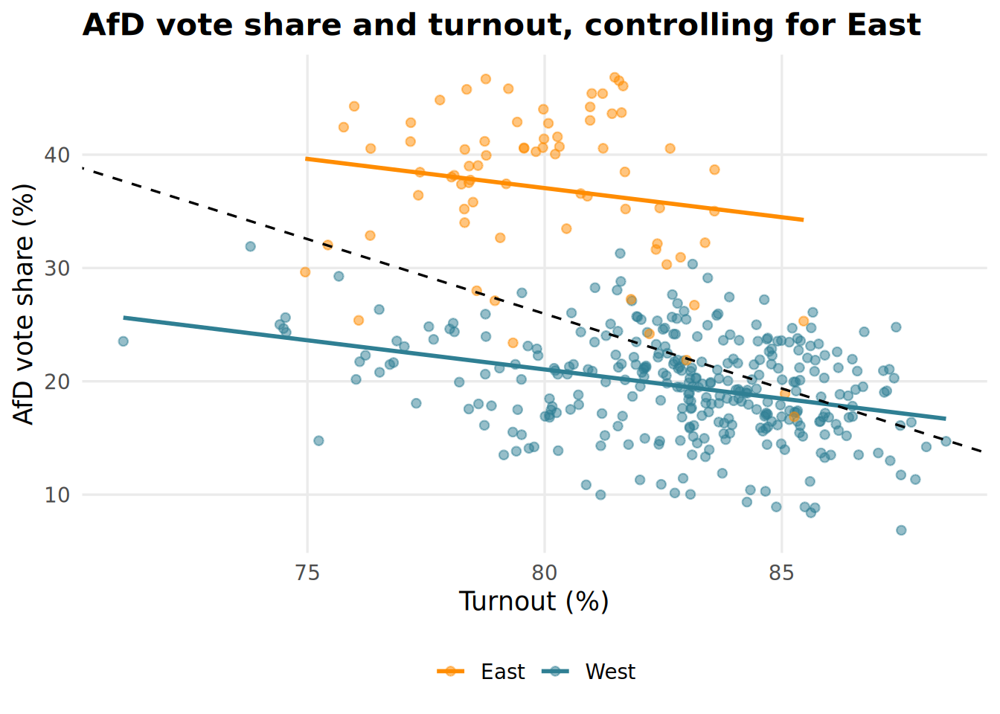
Week 4 left adjusted for models with several predictors. It penalizes each additional predictor, so it only rises when a predictor explains enough to be worth it:
bivariate_glance <- bivariate_model |>
glance() |>
mutate(model = "Turnout only")
control_glance <- control_model |>
glance() |>
mutate(model = "Turnout + East")
bind_rows(bivariate_glance, control_glance) |>
select(model, r.squared, adj.r.squared)# A tibble: 2 x 3
model r.squared adj.r.squared
<chr> <dbl> <dbl>
1 Turnout only 0.217 0.215
2 Turnout + East 0.682 0.680Side by side as a regression table:
turnout_models <- list(
"Turnout only" = bivariate_model,
"Turnout + East" = control_model
)
modelsummary(
turnout_models,
output = "tinytable",
coef_map = c(
"(Intercept)" = "Intercept",
"turnout" = "Turnout (%)",
"east" = "East"
),
statistic = NULL,
stars = FALSE,
gof_map = c("nobs", "r.squared", "adj.r.squared"),
fmt = 3
)| Turnout only | Turnout + East | |
|---|---|---|
| Intercept | 131.447 | 62.206 |
| Turnout (%) | -1.319 | -0.514 |
| East | 16.004 | |
| Num.Obs. | 399 | 399 |
| R2 | 0.217 | 0.682 |
| R2 Adj. | 0.215 | 0.680 |
Above, we held east constant as if it obviously belonged in the model. Whether a variable belongs in a model is a causal question, and the data alone can’t answer it. We switch to a small, well-defined example to see why.
A large German city’s election office ran 300 polling districts (Wahlbezirke, the smallest electoral units) in the last federal election. Do more voting booths shorten the queue? Per district, the office recorded:
| Column | Meaning |
|---|---|
district |
District number |
eligible |
Eligible voters |
last_turnout |
Turnout at the previous federal election (%) |
booths |
Voting booths set up |
wait |
Average waiting time at the midday peak (minutes) |
observer |
1 if an observer from the election office visited, 0 otherwise |
stations <- read_csv("w05/polling_stations.csv")stations# A tibble: 300 x 6
district eligible last_turnout booths wait observer
<dbl> <dbl> <dbl> <dbl> <dbl> <dbl>
1 1 1760 74.5 4 16 1
2 2 1653 67.4 3 12 0
3 3 1995 84.4 5 16 1
4 4 1293 60.6 1 15 1
5 5 1847 72.6 4 18 1
6 6 1173 78.4 2 6 0
7 7 1457 65.4 2 8 0
8 8 2120 70.3 4 21 1
9 9 1908 68 3 17 1
10 10 2211 70.6 4 16 1
# i 290 more rowsstations |>
count(booths)# A tibble: 6 x 2
booths n
<dbl> <int>
1 1 18
2 2 72
3 3 94
4 4 86
5 5 26
6 6 4What we know about how the office works: it allocates booths by the number of eligible voters. Shortly after noon, it sends an observer to every station that reports a queue of more than 12 minutes, and to every large station, meaning one with 6 booths. Observers only watch and take notes.
A directed acyclic graph (DAG) draws our assumptions about what causes what: each node is a variable, each arrow a direct causal effect, and no chain of arrows leads back to where it started. Any sequence of arrows connecting  and , whichever way they point, is a path. A path that starts with an arrow into is a backdoor path: it creates an association between and that isn’t ’s effect.
and , whichever way they point, is a path. A path that starts with an arrow into is a backdoor path: it creates an association between and that isn’t ’s effect.
Two building blocks decide whether a path is open:
With nothing controlled for, the confounder’s backdoor path is open (pink) and biases the estimate of ’s effect on :
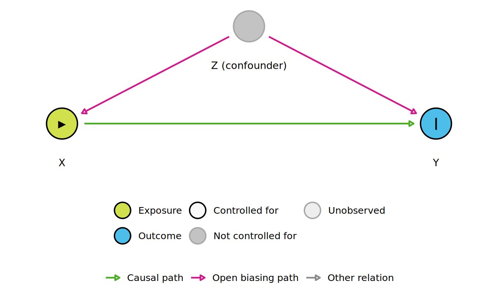
The collider’s path stays closed (grey) as long as we leave out of the model:
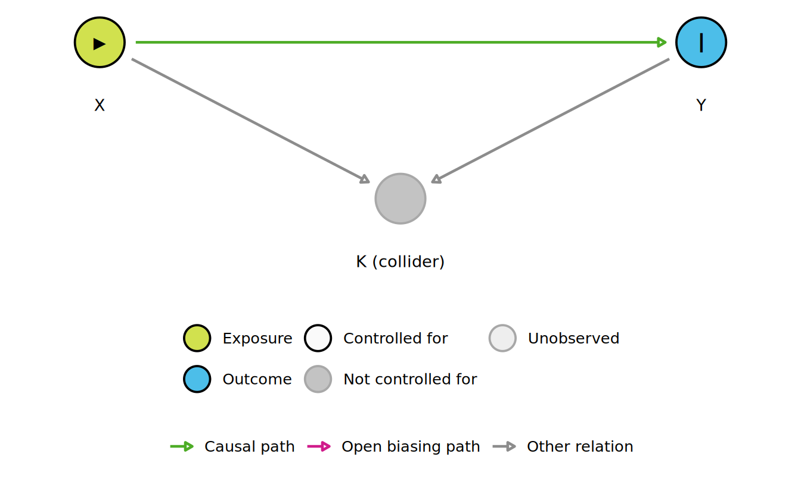
To estimate the effect of on , we need a set of controls that closes every backdoor path without opening a new one, an adjustment set.
dagitty reads a DAG written in its own model code: one line per node (with optional attributes in brackets), one line per arrow. Each DAG’s model code below also works in the browser: paste the text between dagitty(' and ') into the “Model code” box at dagitty.net to move nodes around and click through controls interactively.
To draw the same DAGs here, include/plot_dag.R provides plot_dag(), which uses dagitty.net’s styles: green with a triangle for the exposure, blue with a bar for the outcome, white for what we control for, and light grey for what we don’t observe. Arrows on the causal path are green, and arrows on an open path that biases the estimate are pink. It takes the DAG (what we control for is marked [adjusted] in its model code) and, optionally, readable node labels; without them, it shows the variable names:
source("include/plot_dag.R")
node_labels <- tribble(
~name, ~label,
"booths", "Booths",
"wait", "Waiting time",
"eligible", "Eligible voters",
"observer", "Observer visit",
"usual_turnout", "Usual turnout",
"last_turnout", "Last turnout"
)Usual turnout is how many of a district’s eligible voters habitually go to vote. The office knows it from experience, but it is not recorded anywhere. Most arrows are uncontroversial:
The disputed arrow is "Booths"">. In DAG A, the office follows a strict booths-per-voter rule, and the arrow doesn’t exist:
dag_a <- dagitty('dag {
booths [exposure, pos="0,0"]
wait [outcome, pos="3,0"]
eligible [pos="1.5,-1.7"]
observer [pos="1.5,-0.75"]
usual_turnout [latent, pos="1.5,1.2"]
last_turnout [pos="3,1.6"]
eligible -> booths
eligible -> wait
booths -> wait
booths -> observer
wait -> observer
usual_turnout -> wait
usual_turnout -> last_turnout
}')plot_dag(dag_a, labels = node_labels)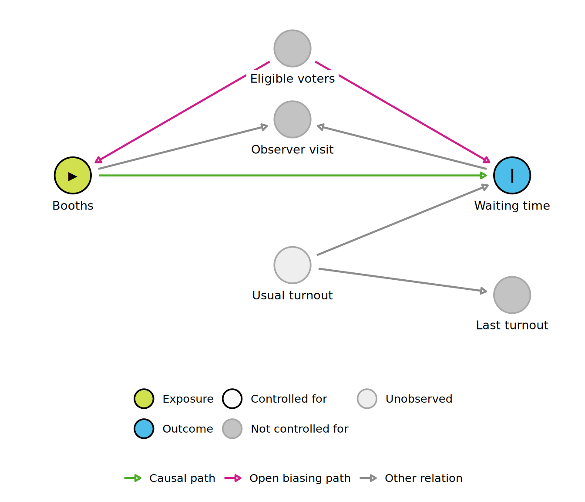
In DAG B, officials know their districts and add booths where turnout is usually high:
dag_b <- dagitty('dag {
booths [exposure, pos="0,0"]
wait [outcome, pos="3,0"]
eligible [pos="1.5,-1.7"]
observer [pos="1.5,-0.75"]
usual_turnout [latent, pos="1.5,1.2"]
last_turnout [pos="3,1.6"]
eligible -> booths
eligible -> wait
booths -> wait
booths -> observer
wait -> observer
usual_turnout -> wait
usual_turnout -> last_turnout
usual_turnout -> booths
}')plot_dag(dag_b, labels = node_labels)
adjustmentSets() lists the minimal adjustment sets among the observed variables. Under DAG A, eligible voters are enough:
adjustmentSets(dag_a){ eligible }Under DAG B, there is none: the backdoor path through usual turnout can only be closed by controlling for usual turnout itself, which we don’t observe:
dag_b |>
adjustmentSets() |>
length()[1] 0Nothing in the data tells us which DAG is right. It’s a claim about how the election office works, and choosing one is an assumption we have to state and defend. We go with DAG B from here on.
We estimate the effect of booths on waiting time five times, each with a different set of controls. Every variant follows the same pattern: the model, its DAG with the controls marked, dagitty’s verdict, the regression, a plot, and the booth coefficient next to the true effect.
| Variant | Controls | Control types | dagitty verdict |
|---|---|---|---|
| 1 | none | two backdoor paths open | |
| 2 | Elig | Elig: confounder | one backdoor path still open |
| 3 | Elig, T-Usual* | Elig: confounder; T-Usual: unobserved confounder, imagined observed | valid adjustment set |
| 4 | Elig, T-Last | Elig: confounder; T-Last: proxy for usual turnout | one backdoor path still open |
| 5 | Elig, T-Last, Obs | Elig: confounder; T-Last: proxy for usual turnout; Obs: collider | collider path opened |
Elig = eligible voters, T-Usual = usual turnout, T-Last = last turnout, Obs = observer visit. Model names in tables and plots list their controls the same way. * Usual turnout is unobserved in practice: variant 3 is impossible with real data, a thought experiment we can only run because of how the data came about.
In every DAG below, the controls are marked [adjusted] in the model code, so pasting it into dagitty.net reproduces the plot.
To draw a model with several predictors as a line, we predict the waiting time for 1 to 6 booths, holding every control at its average:
prediction_grid <- stations |>
summarize(
eligible = mean(eligible),
last_turnout = mean(last_turnout)
) |>
expand_grid(booths = 1:6)
prediction_grid# A tibble: 6 x 3
eligible last_turnout booths
<dbl> <dbl> <int>
1 1615. 71.7 1
2 1615. 71.7 2
3 1615. 71.7 3
4 1615. 71.7 4
5 1615. 71.7 5
6 1615. 71.7 6One color per model variant, used in every plot below:
variant_colors <- c(
"1: none" = "grey50",
"2: Elig" = "#3a9ad9",
"3: Elig, T-Usual*" = "forestgreen",
"4: Elig, T-Last" = "darkorchid",
"5: Elig, T-Last, Obs (no visit)" = "goldenrod",
"5: Elig, T-Last, Obs (visit)" = "darkorange"
)The simplest model regresses waiting time on booths alone, without any control variable:
Nothing is controlled for in the DAG:
dag_v1 <- dagitty('dag {
booths [exposure, pos="0,0"]
wait [outcome, pos="3,0"]
eligible [pos="1.5,-1.7"]
observer [pos="1.5,-0.75"]
usual_turnout [latent, pos="1.5,1.2"]
last_turnout [pos="3,1.6"]
eligible -> booths
eligible -> wait
booths -> wait
booths -> observer
wait -> observer
usual_turnout -> wait
usual_turnout -> last_turnout
usual_turnout -> booths
}')plot_dag(dag_v1, labels = node_labels)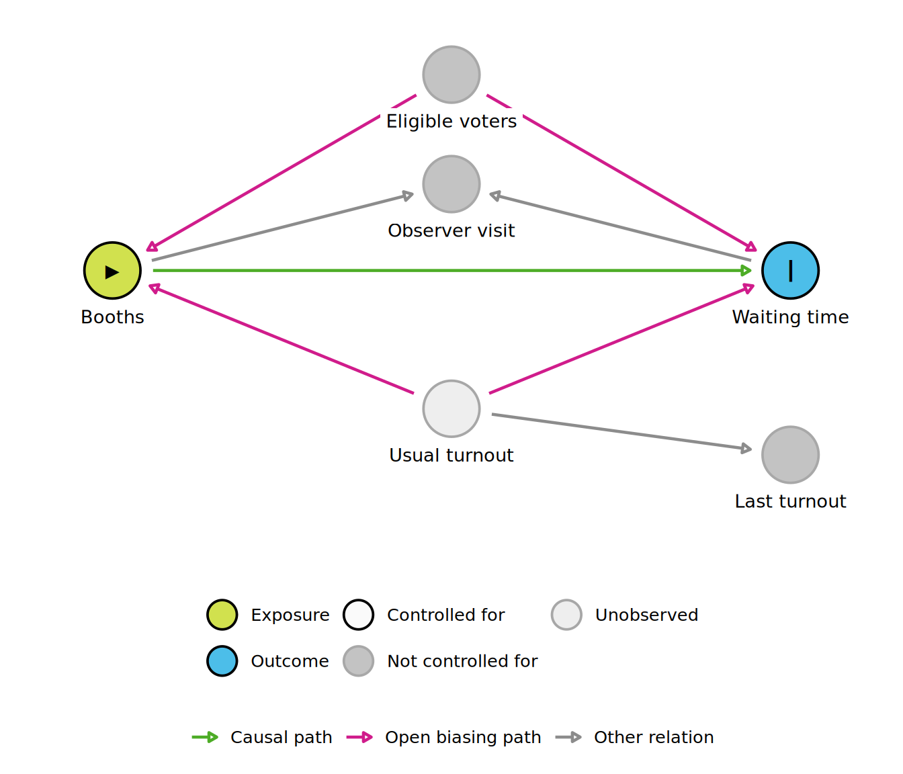
paths() lists every path between booths and waiting time and whether it is open, given the controls. Both backdoor paths are open; only the path through the observer visit is closed, since it runs through a collider:
paths(dag_v1, Z = adjustedNodes(dag_v1)) |>
as_tibble()# A tibble: 4 x 2
paths open
<chr> <lgl>
1 booths -> observer <- wait FALSE
2 booths -> wait TRUE
3 booths <- eligible -> wait TRUE
4 booths <- usual_turnout -> wait TRUE With nothing controlled for, there is no adjustment set:
isAdjustmentSet(dag_v1, adjustedNodes(dag_v1))[1] FALSEmodel_v1 <- lm(wait ~ booths, data = stations)
model_v1 |>
tidy()# A tibble: 2 x 5
term estimate std.error statistic p.value
<chr> <dbl> <dbl> <dbl> <dbl>
1 (Intercept) 7.96 0.914 8.71 0.000000000000000211
2 booths 1.33 0.275 4.83 0.00000217 beta_v1 <- model_v1 |>
tidy() |>
filter(term == "booths") |>
pull(estimate)
beta_v1[1] 1.327584lines_v1 <- model_v1 |>
augment(newdata = prediction_grid) |>
mutate(model = "1: none")stations |>
ggplot(aes(x = booths)) +
geom_jitter(aes(y = wait), width = 0.15, height = 0, alpha = 0.3) +
geom_line(aes(y = .fitted, color = model), data = lines_v1, linewidth = 1) +
scale_color_manual(values = variant_colors) +
labs(
title = "Waiting time vs. booths, variant 1",
x = "Voting booths",
y = "Waiting time (minutes)",
color = NULL
) +
theme_intror()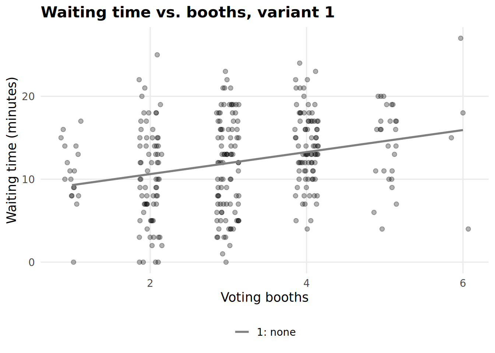
A running plot collects the booth coefficient from every variant. With draw = FALSE, modelplot() returns its estimates as a tibble instead of a plot, so we can draw them ourselves. The bars are 95% confidence intervals (Week 3); how they are computed for regression coefficients comes in Week 6. The red line marks the true effect of a booth; how we can know it, we reveal at the end:
variant_models <- list("1: none" = model_v1)
modelplot(variant_models, coef_map = c(booths = "Booths"), draw = FALSE) |>
ggplot(aes(x = estimate, y = fct_rev(model))) +
geom_vline(xintercept = 0, linetype = "dashed") +
geom_vline(xintercept = -3, color = "firebrick", linewidth = 1) +
geom_errorbar(aes(xmin = conf.low, xmax = conf.high), width = 0.2, color = course_primary) +
geom_point(size = 3, color = course_primary) +
labs(
title = "Estimated vs. true effect of one booth",
x = "Minutes of waiting time",
y = NULL
) +
theme_intror()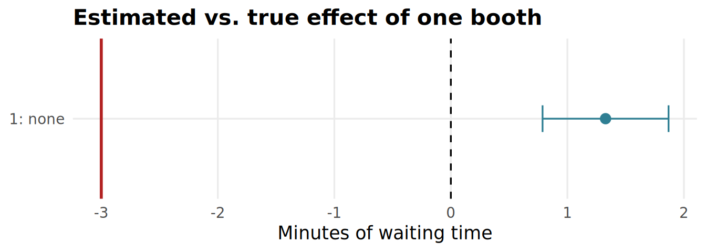
More booths, longer queues: one more booth goes along with 1.33 more minutes of waiting. Big districts and districts that usually vote a lot get more booths and have longer queues, and both open backdoor paths flip the sign.
Eligible voters are a confounder: they cause both the number of booths and the waiting time. Controlling for them closes that backdoor path:
dag_v2 <- dagitty('dag {
booths [exposure, pos="0,0"]
wait [outcome, pos="3,0"]
eligible [adjusted, pos="1.5,-1.7"]
observer [pos="1.5,-0.75"]
usual_turnout [latent, pos="1.5,1.2"]
last_turnout [pos="3,1.6"]
eligible -> booths
eligible -> wait
booths -> wait
booths -> observer
wait -> observer
usual_turnout -> wait
usual_turnout -> last_turnout
usual_turnout -> booths
}')plot_dag(dag_v2, labels = node_labels)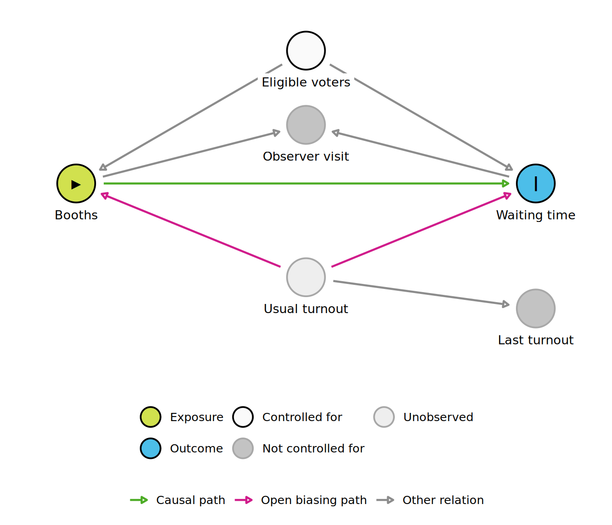
paths(dag_v2, Z = adjustedNodes(dag_v2)) |>
as_tibble()# A tibble: 4 x 2
paths open
<chr> <lgl>
1 booths -> observer <- wait FALSE
2 booths -> wait TRUE
3 booths <- eligible -> wait FALSE
4 booths <- usual_turnout -> wait TRUE The path through usual turnout stays open, so eligible voters alone are not an adjustment set:
isAdjustmentSet(dag_v2, adjustedNodes(dag_v2))[1] FALSEmodel_v2 <- lm(wait ~ booths + eligible, data = stations)
model_v2 |>
tidy()# A tibble: 3 x 5
term estimate std.error statistic p.value
<chr> <dbl> <dbl> <dbl> <dbl>
1 (Intercept) -3.59 0.989 -3.63 0.000334
2 booths -1.42 0.265 -5.33 0.000000192
3 eligible 0.0125 0.000784 15.9 0.00000000000000000000000000000000000000000925beta_v2 <- model_v2 |>
tidy() |>
filter(term == "booths") |>
pull(estimate)
beta_v2[1] -1.415122lines_v2 <- model_v2 |>
augment(newdata = prediction_grid) |>
mutate(model = "2: Elig")
lines_v1_v2 <- bind_rows(lines_v1, lines_v2)stations |>
ggplot(aes(x = booths)) +
geom_jitter(aes(y = wait), width = 0.15, height = 0, alpha = 0.3) +
geom_line(aes(y = .fitted, color = model), data = lines_v1_v2, linewidth = 1) +
scale_color_manual(values = variant_colors) +
labs(
title = "Waiting time vs. booths, variants 1 and 2",
x = "Voting booths",
y = "Waiting time (minutes)",
color = NULL
) +
theme_intror()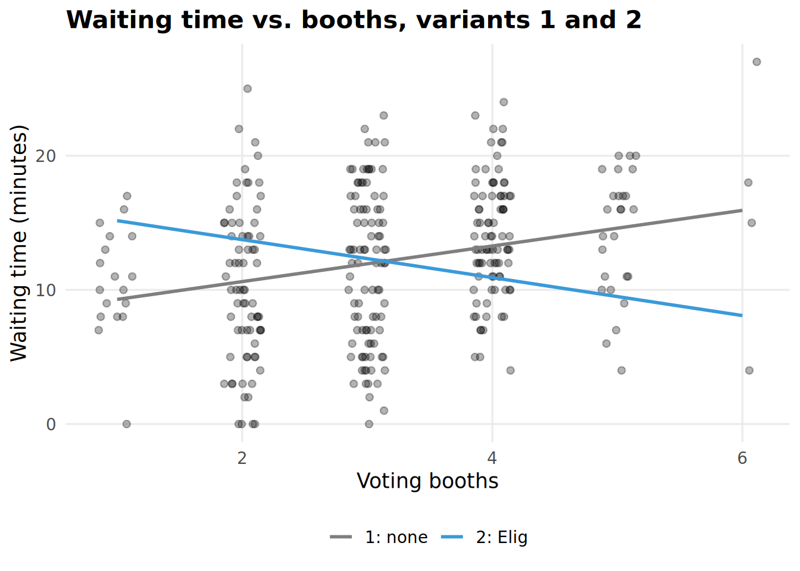
variant_models <- list(
"1: none" = model_v1,
"2: Elig" = model_v2
)
modelplot(variant_models, coef_map = c(booths = "Booths"), draw = FALSE) |>
ggplot(aes(x = estimate, y = fct_rev(model))) +
geom_vline(xintercept = 0, linetype = "dashed") +
geom_vline(xintercept = -3, color = "firebrick", linewidth = 1) +
geom_errorbar(aes(xmin = conf.low, xmax = conf.high), width = 0.2, color = course_primary) +
geom_point(size = 3, color = course_primary) +
labs(
title = "Estimated vs. true effect of one booth",
x = "Minutes of waiting time",
y = NULL
) +
theme_intror()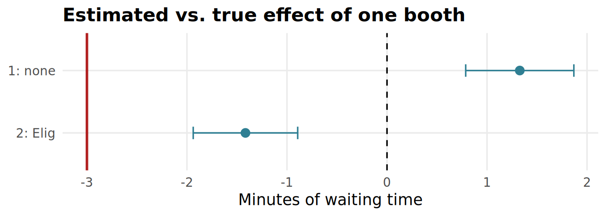
With the size of the district held constant, the slope turns negative (-1.42 minutes per booth), but it is still far from the true effect: the open path through usual turnout pulls it towards zero.
Usual turnout is the unobserved confounder that keeps the last backdoor path open. Imagine for one variant that the office had written down its knowledge of each district’s usual turnout. Controlling for it together with eligible voters closes every backdoor path:
In the DAG, usual turnout is now observed and controlled for:
dag_v3 <- dagitty('dag {
booths [exposure, pos="0,0"]
wait [outcome, pos="3,0"]
eligible [adjusted, pos="1.5,-1.7"]
observer [pos="1.5,-0.75"]
usual_turnout [adjusted, pos="1.5,1.2"]
last_turnout [pos="3,1.6"]
eligible -> booths
eligible -> wait
booths -> wait
booths -> observer
wait -> observer
usual_turnout -> wait
usual_turnout -> last_turnout
usual_turnout -> booths
}')plot_dag(dag_v3, labels = node_labels)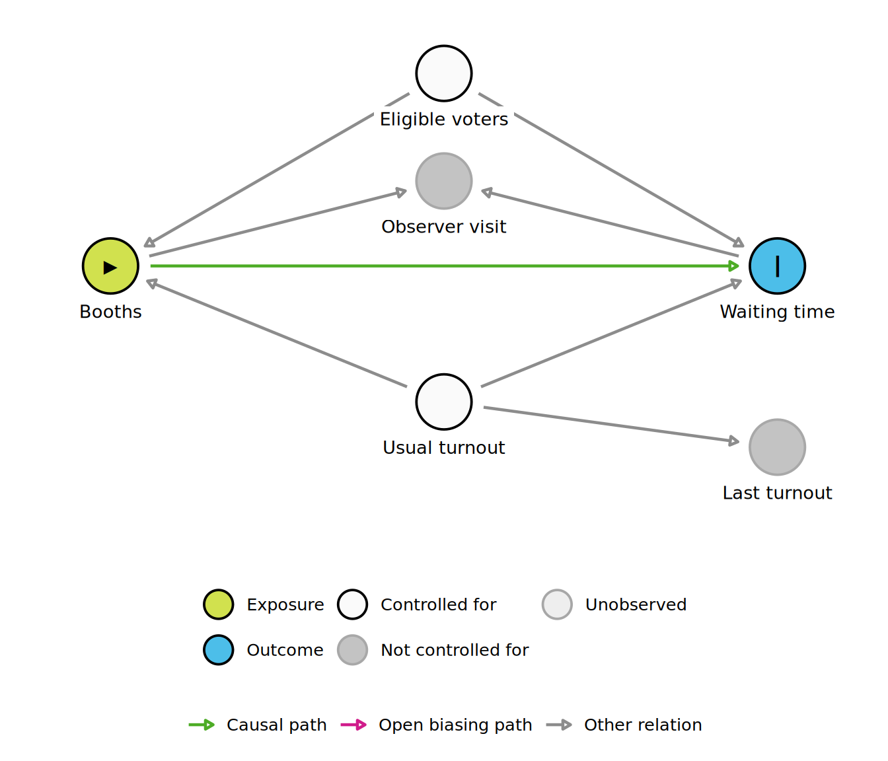
paths(dag_v3, Z = adjustedNodes(dag_v3)) |>
as_tibble()# A tibble: 4 x 2
paths open
<chr> <lgl>
1 booths -> observer <- wait FALSE
2 booths -> wait TRUE
3 booths <- eligible -> wait FALSE
4 booths <- usual_turnout -> wait FALSEOnly the causal path is left open. This is a valid adjustment set:
isAdjustmentSet(dag_v3, adjustedNodes(dag_v3))[1] TRUEThe office’s records of usual turnout come in a separate file, which we join by district:
stations_usual <- read_csv("w05/usual_turnout.csv") |>
right_join(stations, by = "district")stations_usual# A tibble: 300 x 7
district usual_turnout eligible last_turnout booths wait observer
<dbl> <dbl> <dbl> <dbl> <dbl> <dbl> <dbl>
1 1 70.8 1760 74.5 4 16 1
2 2 67 1653 67.4 3 12 0
3 3 81.5 1995 84.4 5 16 1
4 4 59.6 1293 60.6 1 15 1
5 5 77.2 1847 72.6 4 18 1
6 6 73.8 1173 78.4 2 6 0
7 7 63.4 1457 65.4 2 8 0
8 8 69 2120 70.3 4 21 1
9 9 67.8 1908 68 3 17 1
10 10 65.5 2211 70.6 4 16 1
# i 290 more rowsmodel_v3 <- lm(wait ~ booths + eligible + usual_turnout, data = stations_usual)
model_v3 |>
tidy()# A tibble: 4 x 5
term estimate std.error statistic p.value
<chr> <dbl> <dbl> <dbl> <dbl>
1 (Intercept) -19.7 3.93 -5.01 0.000000947
2 booths -2.98 0.452 -6.60 0.000000000191
3 eligible 0.0155 0.00105 14.8 0.000000000000000000000000000000000000166
4 usual_turnout 0.225 0.0532 4.22 0.0000320 beta_v3 <- model_v3 |>
tidy() |>
filter(term == "booths") |>
pull(estimate)
beta_v3[1] -2.980061usual_grid <- stations_usual |>
summarize(usual_turnout = mean(usual_turnout)) |>
expand_grid(prediction_grid)
lines_v3 <- model_v3 |>
augment(newdata = usual_grid) |>
mutate(model = "3: Elig, T-Usual*")
lines_v2_v3 <- bind_rows(lines_v2, lines_v3)stations |>
ggplot(aes(x = booths)) +
geom_jitter(aes(y = wait), width = 0.15, height = 0, alpha = 0.3) +
geom_line(aes(y = .fitted, color = model), data = lines_v2_v3, linewidth = 1) +
scale_color_manual(values = variant_colors) +
labs(
title = "Waiting time vs. booths, variants 2 and 3",
x = "Voting booths",
y = "Waiting time (minutes)",
color = NULL,
caption = "* Usual turnout is unobserved in practice: impossible with real data"
) +
theme_intror()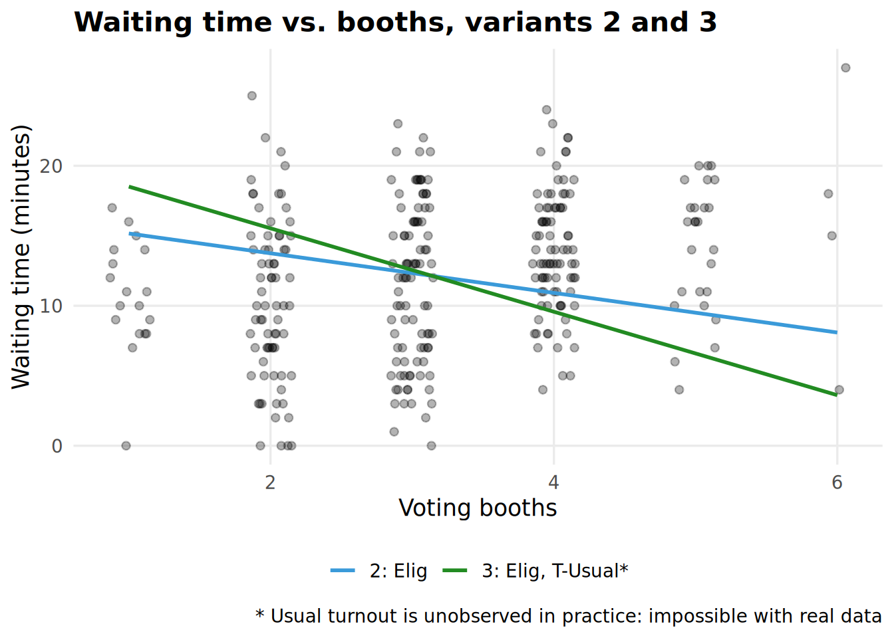
variant_models <- list(
"1: none" = model_v1,
"2: Elig" = model_v2,
"3: Elig, T-Usual*" = model_v3
)
modelplot(variant_models, coef_map = c(booths = "Booths"), draw = FALSE) |>
ggplot(aes(x = estimate, y = fct_rev(model))) +
geom_vline(xintercept = 0, linetype = "dashed") +
geom_vline(xintercept = -3, color = "firebrick", linewidth = 1) +
geom_errorbar(aes(xmin = conf.low, xmax = conf.high), width = 0.2, color = course_primary) +
geom_point(size = 3, color = course_primary) +
labs(
title = "Estimated vs. true effect of one booth",
x = "Minutes of waiting time",
y = NULL,
caption = "* Usual turnout is unobserved in practice: impossible with real data"
) +
theme_intror()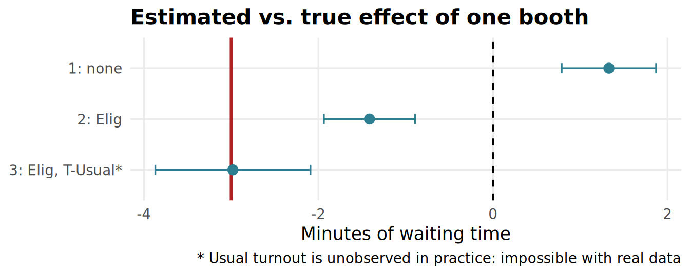
With a valid adjustment set, the estimate (-2.98 minutes per booth) lands right on the true effect. In practice, usual turnout is not recorded, so from here on it is unobserved again.
Without usual turnout, we can still control for last election’s turnout. It is a proxy: it is caused by usual turnout, so it carries part of the same information:
dag_v4 <- dagitty('dag {
booths [exposure, pos="0,0"]
wait [outcome, pos="3,0"]
eligible [adjusted, pos="1.5,-1.7"]
observer [pos="1.5,-0.75"]
usual_turnout [latent, pos="1.5,1.2"]
last_turnout [adjusted, pos="3,1.6"]
eligible -> booths
eligible -> wait
booths -> wait
booths -> observer
wait -> observer
usual_turnout -> wait
usual_turnout -> last_turnout
usual_turnout -> booths
}')plot_dag(dag_v4, labels = node_labels)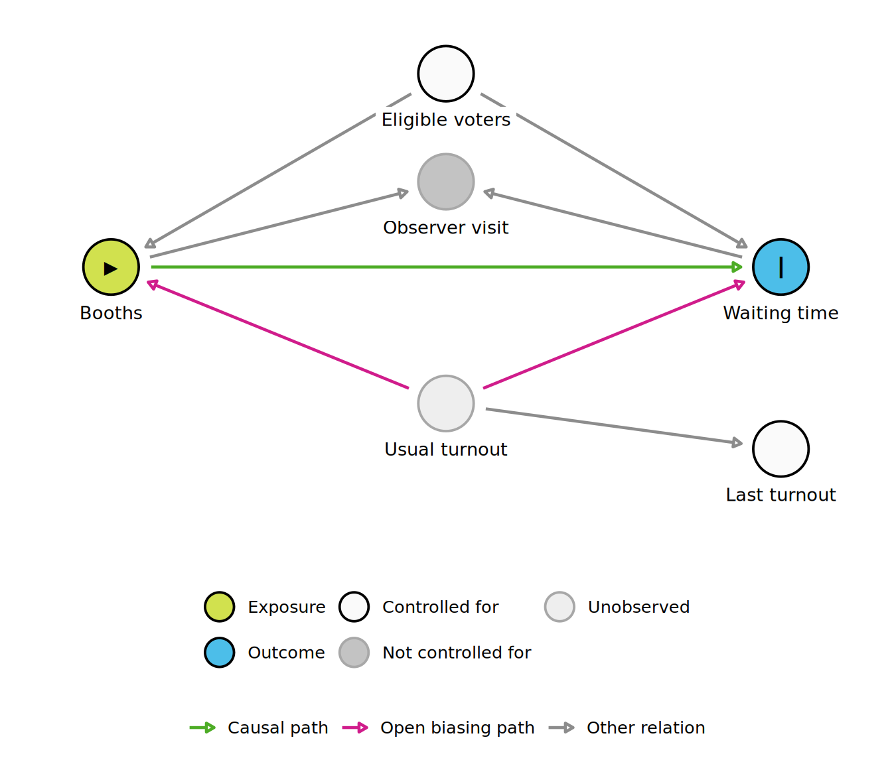
Last turnout doesn’t sit on the backdoor path, so dagitty still reports the path open:
paths(dag_v4, Z = adjustedNodes(dag_v4)) |>
as_tibble()# A tibble: 4 x 2
paths open
<chr> <lgl>
1 booths -> observer <- wait FALSE
2 booths -> wait TRUE
3 booths <- eligible -> wait FALSE
4 booths <- usual_turnout -> wait TRUE isAdjustmentSet(dag_v4, adjustedNodes(dag_v4))[1] FALSEmodel_v4 <- lm(wait ~ booths + eligible + last_turnout, data = stations)
model_v4 |>
tidy()# A tibble: 4 x 5
term estimate std.error statistic p.value
<chr> <dbl> <dbl> <dbl> <dbl>
1 (Intercept) -14.7 3.45 -4.25 0.0000292
2 booths -2.45 0.406 -6.05 0.00000000448
3 eligible 0.0145 0.000980 14.8 0.000000000000000000000000000000000000158
4 last_turnout 0.154 0.0462 3.34 0.000941 beta_v4 <- model_v4 |>
tidy() |>
filter(term == "booths") |>
pull(estimate)
beta_v4[1] -2.454241lines_v4 <- model_v4 |>
augment(newdata = prediction_grid) |>
mutate(model = "4: Elig, T-Last")
lines_v2_v4 <- bind_rows(lines_v2, lines_v4)stations |>
ggplot(aes(x = booths)) +
geom_jitter(aes(y = wait), width = 0.15, height = 0, alpha = 0.3) +
geom_line(aes(y = .fitted, color = model), data = lines_v2_v4, linewidth = 1) +
scale_color_manual(values = variant_colors) +
labs(
title = "Waiting time vs. booths, variants 2 and 4",
x = "Voting booths",
y = "Waiting time (minutes)",
color = NULL
) +
theme_intror()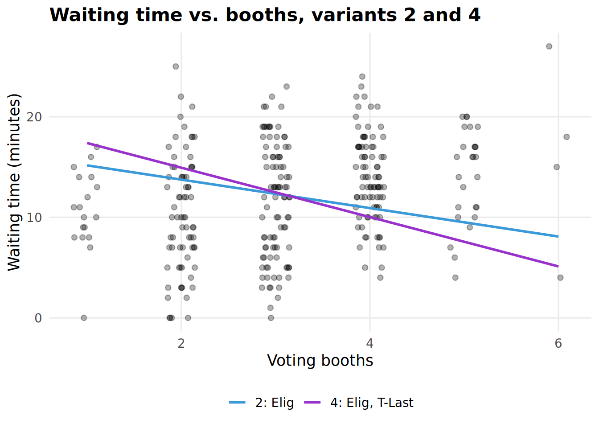
variant_models <- list(
"1: none" = model_v1,
"2: Elig" = model_v2,
"3: Elig, T-Usual*" = model_v3,
"4: Elig, T-Last" = model_v4
)
modelplot(variant_models, coef_map = c(booths = "Booths"), draw = FALSE) |>
ggplot(aes(x = estimate, y = fct_rev(model))) +
geom_vline(xintercept = 0, linetype = "dashed") +
geom_vline(xintercept = -3, color = "firebrick", linewidth = 1) +
geom_errorbar(aes(xmin = conf.low, xmax = conf.high), width = 0.2, color = course_primary) +
geom_point(size = 3, color = course_primary) +
labs(
title = "Estimated vs. true effect of one booth",
x = "Minutes of waiting time",
y = NULL,
caption = "* Usual turnout is unobserved in practice: impossible with real data"
) +
theme_intror()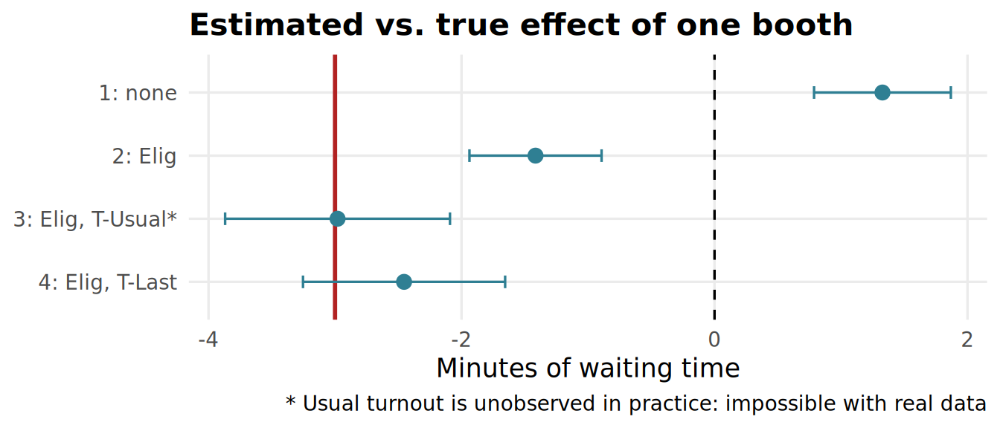
The proxy moves the estimate from -1.42 to -2.45 minutes per booth, much closer to the true effect. It narrows the gap the unobserved confounder leaves, but can’t close it.
The observer visit is a collider: both booths and waiting time cause it. Still, why not control for it on top of variant 4, as a measure of how closely the office watched a station?
dag_v5 <- dagitty('dag {
booths [exposure, pos="0,0"]
wait [outcome, pos="3,0"]
eligible [adjusted, pos="1.5,-1.7"]
observer [adjusted, pos="1.5,-0.75"]
usual_turnout [latent, pos="1.5,1.2"]
last_turnout [adjusted, pos="3,1.6"]
eligible -> booths
eligible -> wait
booths -> wait
booths -> observer
wait -> observer
usual_turnout -> wait
usual_turnout -> last_turnout
usual_turnout -> booths
}')plot_dag(dag_v5, labels = node_labels)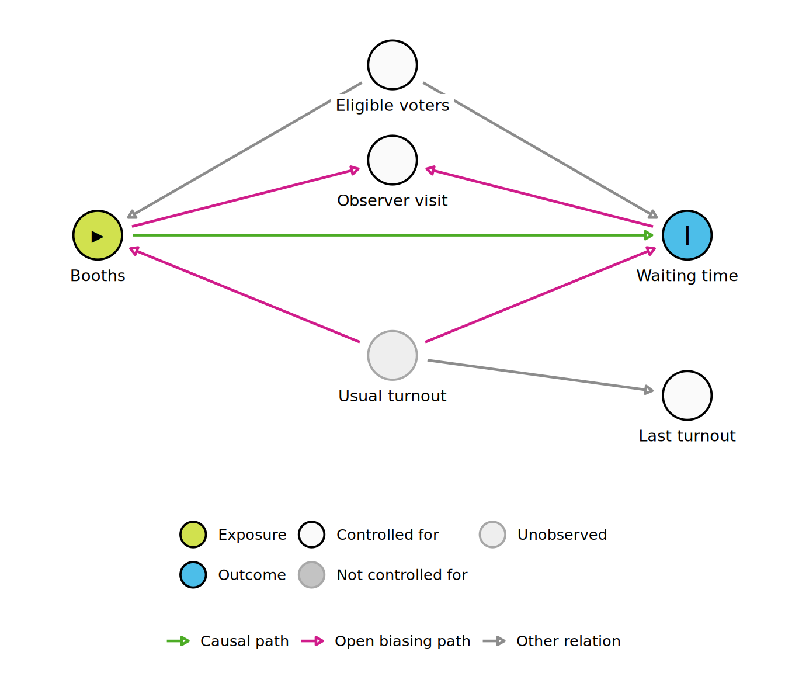
Controlling for the observer visit opens the path "Observer" <- "Wait"">:
paths(dag_v5, Z = adjustedNodes(dag_v5)) |>
as_tibble()# A tibble: 4 x 2
paths open
<chr> <lgl>
1 booths -> observer <- wait TRUE
2 booths -> wait TRUE
3 booths <- eligible -> wait FALSE
4 booths <- usual_turnout -> wait TRUE isAdjustmentSet(dag_v5, adjustedNodes(dag_v5))[1] FALSEmodel_v5 <- lm(wait ~ booths + eligible + last_turnout + observer, data = stations)
model_v5 |>
tidy()# A tibble: 5 x 5
term estimate std.error statistic p.value
<chr> <dbl> <dbl> <dbl> <dbl>
1 (Intercept) -5.14 2.55 -2.02 0.0447
2 booths -1.35 0.300 -4.49 0.0000101
3 eligible 0.00758 0.000819 9.25 0.00000000000000000457
4 last_turnout 0.0835 0.0335 2.49 0.0133
5 observer 6.47 0.389 16.6 0.0000000000000000000000000000000000000000000279beta_v5 <- model_v5 |>
tidy() |>
filter(term == "booths") |>
pull(estimate)
beta_v5[1] -1.34639The model predicts one line for visited and one for unvisited stations. Visited stations are mostly those with long queues, unvisited ones those with short queues, whatever their number of booths. Within each group, the booth slope flattens compared to variant 4:
lines_v5 <- model_v5 |>
augment(newdata = expand_grid(prediction_grid, observer = 0:1)) |>
mutate(model = if_else(observer == 1, "5: Elig, T-Last, Obs (visit)", "5: Elig, T-Last, Obs (no visit)"))
lines_v4_v5 <- bind_rows(lines_v4, lines_v5)stations |>
ggplot(aes(x = booths)) +
geom_jitter(aes(y = wait), width = 0.15, height = 0, alpha = 0.3) +
geom_line(aes(y = .fitted, color = model), data = lines_v4_v5, linewidth = 1) +
scale_color_manual(values = variant_colors) +
labs(
title = "Waiting time vs. booths, variants 4 and 5",
x = "Voting booths",
y = "Waiting time (minutes)",
color = NULL
) +
theme_intror()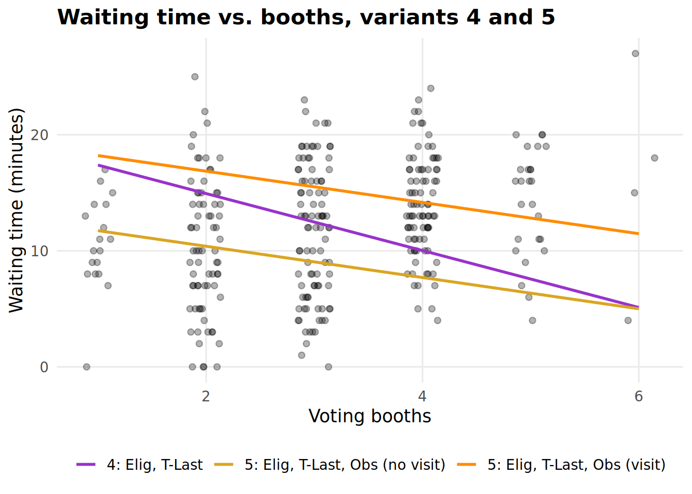
variant_models <- list(
"1: none" = model_v1,
"2: Elig" = model_v2,
"3: Elig, T-Usual*" = model_v3,
"4: Elig, T-Last" = model_v4,
"5: Elig, T-Last, Obs" = model_v5
)
modelplot(variant_models, coef_map = c(booths = "Booths"), draw = FALSE) |>
ggplot(aes(x = estimate, y = fct_rev(model))) +
geom_vline(xintercept = 0, linetype = "dashed") +
geom_vline(xintercept = -3, color = "firebrick", linewidth = 1) +
geom_errorbar(aes(xmin = conf.low, xmax = conf.high), width = 0.2, color = course_primary) +
geom_point(size = 3, color = course_primary) +
labs(
title = "Estimated vs. true effect of one booth",
x = "Minutes of waiting time",
y = NULL,
caption = "* Usual turnout is unobserved in practice: impossible with real data"
) +
theme_intror()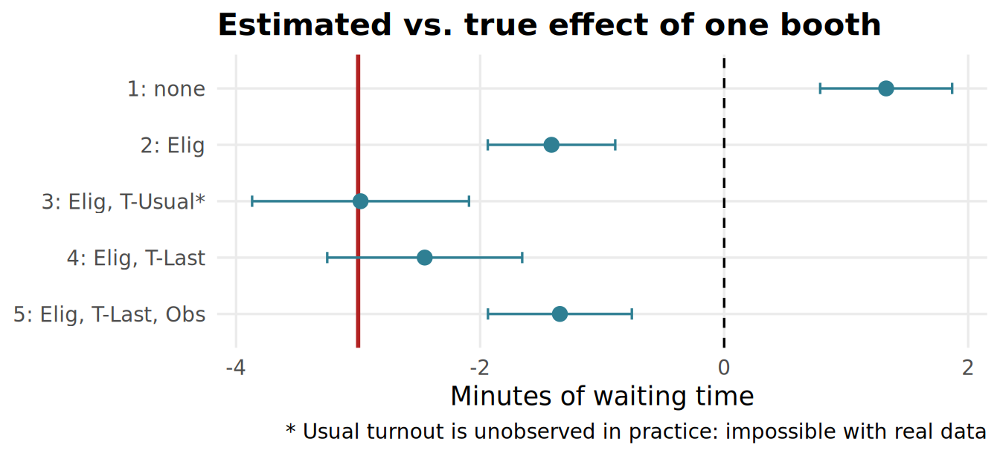
With the observer visit controlled for, a booth seems to save only 1.35 minutes: the office would conclude that extra booths hardly pay off. The collider undid most of what the proxy gained.
All five model variants side by side:
modelsummary(
variant_models,
output = "tinytable",
coef_map = c(
"booths" = "Booths",
"eligible" = "Eligible voters",
"usual_turnout" = "Usual turnout (%)",
"last_turnout" = "Last turnout (%)",
"observer" = "Observer visit"
),
statistic = NULL,
stars = FALSE,
gof_map = c("nobs", "r.squared"),
fmt = 3,
notes = "* Usual turnout is unobserved in practice: variant 3 is impossible with real data."
)| 1: none | 2: Elig | 3: Elig, T-Usual* | 4: Elig, T-Last | 5: Elig, T-Last, Obs | |
|---|---|---|---|---|---|
| * Usual turnout is unobserved in practice: variant 3 is impossible with real data. | |||||
| Booths | 1.328 | -1.415 | -2.980 | -2.454 | -1.346 |
| Eligible voters | 0.012 | 0.016 | 0.015 | 0.008 | |
| Usual turnout (%) | 0.225 | ||||
| Last turnout (%) | 0.154 | 0.083 | |||
| Observer visit | 6.469 | ||||
| Num.Obs. | 300 | 300 | 300 | 300 | 300 |
| R2 | 0.073 | 0.500 | 0.529 | 0.518 | 0.751 |
Note that rises with every control: a better fit says nothing about whether a control belongs in the model.
Every variant’s DAG code marks its controls [adjusted]. isAdjustmentSet() checks whether a set we chose is valid, so one rowwise() pass checks all five variants at once:
variant_dags <- tibble(
variant = names(variant_models),
dag = list(dag_v1, dag_v2, dag_v3, dag_v4, dag_v5)
)
variant_dags |>
rowwise() |>
mutate(
controls = str_flatten_comma(adjustedNodes(dag)),
valid = isAdjustmentSet(dag, adjustedNodes(dag))
) |>
ungroup() |>
select(variant, controls, valid)# A tibble: 5 x 3
variant controls valid
<chr> <chr> <lgl>
1 1: none "" FALSE
2 2: Elig "eligible" FALSE
3 3: Elig, T-Usual* "eligible, usual_turnout" TRUE
4 4: Elig, T-Last "eligible, last_turnout" FALSE
5 5: Elig, T-Last, Obs "eligible, last_turnout, observer" FALSEWe didn’t need to try out control sets at all. adjustmentSets() finds the valid ones from the DAG alone: it ignores [adjusted] marks and only needs to know which variables are observed. For the original DAG B, with usual turnout unobserved, it finds none:
dag_b |>
adjustmentSets() |>
length()[1] 0In variant 3’s DAG, usual turnout is observed, and adjustmentSets() finds exactly one minimal set:
adjustmentSets(dag_v3){ eligible, usual_turnout }With type = "all", it lists every valid set, not just the smallest ones:
adjustmentSets(dag_v3, type = "all"){ eligible, usual_turnout }
{ eligible, last_turnout, usual_turnout }The polling stations aren’t real: we simulated them, following DAG B. That’s how we know the true effect, which real data never tells us. The code that generated the data:
p_load(tidyverse)
set.seed(175)
n_districts <- 300
# eligible voters per district
eligible_mean <- 1600
eligible_sd <- 380
eligible_min <- 800
eligible_max <- 2500
# usual turnout (%): the voting habit of the district, known to the office, normally never recorded
turnout_mean <- 72
turnout_sd <- 7
turnout_min <- 52
turnout_max <- 88
last_turnout_noise <- 2.5
# one booth per ~500 eligible voters, plus one per 10 points of usual turnout
voters_per_booth <- 500
turnout_per_booth <- 10
booths_noise <- 0.45
booths_min <- 1
booths_max <- 6
booths_mean <- 3.2
# waiting time (minutes) at an average station, and what drives it
wait_mean <- 12
wait_per_eligible <- 0.016
wait_per_turnout <- 0.25
true_effect <- -3
wait_noise <- 4
# observers go to every station with the most booths and to every long queue
observer_wait <- 12
polling_stations <- tibble(
district = 1:n_districts,
eligible = rnorm(n_districts, eligible_mean, eligible_sd) |>
pmax(eligible_min) |>
pmin(eligible_max) |>
round(),
usual_turnout = rnorm(n_districts, turnout_mean, turnout_sd) |>
pmax(turnout_min) |>
pmin(turnout_max),
last_turnout = round(usual_turnout + rnorm(n_districts, 0, last_turnout_noise), 1),
booths = (eligible / voters_per_booth +
(usual_turnout - turnout_mean) / turnout_per_booth +
rnorm(n_districts, 0, booths_noise)) |>
round() |>
pmax(booths_min) |>
pmin(booths_max),
wait = (wait_mean +
wait_per_eligible * (eligible - eligible_mean) +
wait_per_turnout * (usual_turnout - turnout_mean) +
true_effect * (booths - booths_mean) +
rnorm(n_districts, 0, wait_noise)) |>
pmax(0) |>
round(),
observer = as.integer(booths == booths_max | wait > observer_wait)
)
polling_stations |>
select(-usual_turnout) |>
write_csv("w05/polling_stations.csv")
polling_stations |>
transmute(district, usual_turnout = round(usual_turnout, 1)) |>
write_csv("w05/usual_turnout.csv")Every additional booth cuts the wait by exactly 3 minutes. Each booth estimate with its 95% CI, as a share of the true effect, and whether the CI covers the true effect:
variant_estimates <- variant_models |>
modelplot(
coef_map = c(booths = "Booths"),
draw = FALSE
) |>
rowwise() |>
mutate(
share_of_true = estimate / true_effect,
true_within_ci = between(true_effect, conf.low, conf.high)
) |>
ungroup() |>
select(model, estimate, conf.low, conf.high, share_of_true, true_within_ci)
variant_estimates# A tibble: 5 x 6
model estimate conf.low conf.high share_of_true true_within_ci
<fct> <dbl> <dbl> <dbl> <dbl> <lgl>
1 1: none 1.33 0.787 1.87 -0.443 FALSE
2 2: Elig -1.42 -1.94 -0.893 0.472 FALSE
3 3: Elig, T-Usual* -2.98 -3.87 -2.09 0.993 TRUE
4 4: Elig, T-Last -2.45 -3.25 -1.66 0.818 TRUE
5 5: Elig, T-Last, Obs -1.35 -1.94 -0.757 0.449 FALSE Depending on what we control for, the same data tell very different stories. Without controls, the estimate even has the wrong sign: booths seem to lengthen the queue. Controlling for eligible voters alone, or adding the observer visit on top of the proxy, recovers only about half of the true effect. The proxy gets to about four fifths, and its CI still covers the true effect. Only the valid adjustment set of variant 3 hits the true effect, and it needed a variable we don’t have.
Which variables to control for follows from a causal graph, and the graph is an assumption: here, a single disputed arrow decided whether any adjustment set exists at all. Papers make the same assumptions whenever they “control for” something, usually without drawing them. Some confounders are unobserved; a proxy can narrow the gap they leave, but not close it. Controlling for the wrong variable, like a collider, can make an estimate worse, and no fit statistic warns you. Without a full course in causal inference, writing the DAG down in dagitty and checking its adjustment sets is a minimum. Standard errors and significance come in Week 6.
Your task: estimate the turnout slope for AfD support while holding population density constant (on a log scale, as in Week 4) instead of East. Purge log(density) from both variables by hand, regress the residuals on each other, and confirm the slope with lm(). How does it compare to the slope with east held constant?
# A tibble: 2 x 5
term estimate std.error statistic p.value
<chr> <dbl> <dbl> <dbl> <dbl>
1 (Intercept) -0.0000000000000452 0.264 -0.000000000000171 1.000e+ 0
2 turnout_resid -1.81 0.0916 -19.7 6.16 e-61# A tibble: 3 x 5
term estimate std.error statistic p.value
<chr> <dbl> <dbl> <dbl> <dbl>
1 (Intercept) 200. 8.05 24.9 6.96e-83
2 turnout -1.81 0.0917 -19.7 8.69e-61
3 log(density) -5.03 0.250 -20.1 1.38e-62Your task: suppose DAG A is the true DAG instead. For the control sets of model variants 1, 2, 4 and 5 (the ones that don’t need usual turnout), check with isAdjustmentSet() whether each would be a valid adjustment set under DAG A and under DAG B. Which variants would then have estimated the effect without bias?
# A tibble: 4 x 3
variant valid_a valid_b
<chr> <lgl> <lgl>
1 1: none FALSE FALSE
2 2: Elig TRUE FALSE
3 4: Elig, T-Last TRUE FALSE
4 5: Elig, T-Last, Obs FALSE FALSE Your task: some districts include a care home whose residents often need assistance in the booth, which slows down the queue. Add a node care_home to DAG B (with an arrow into waiting time only) and plot it. Would you need to control for it? Would controlling for it hurt? Use paths() and adjustmentSets() to argue.
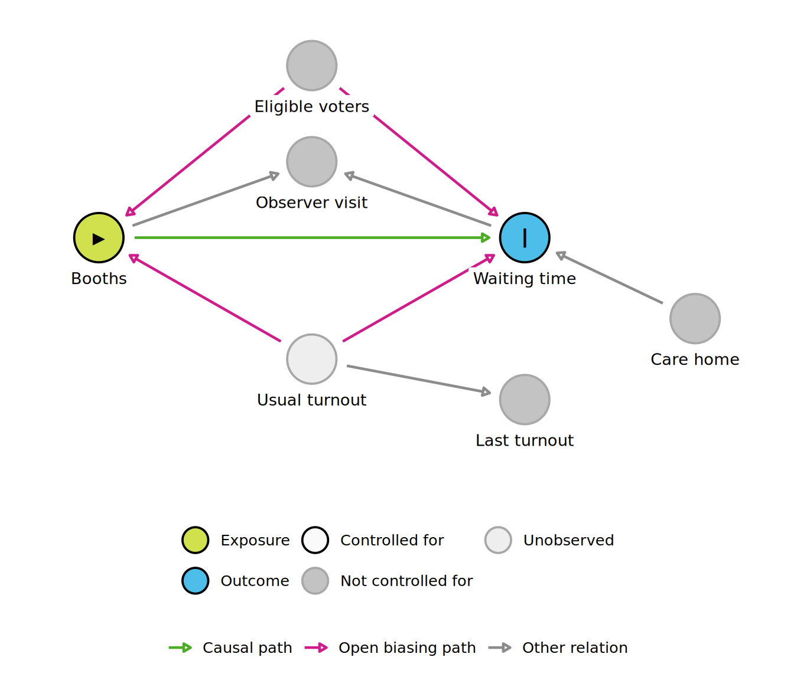
# A tibble: 4 x 2
paths open
<chr> <lgl>
1 booths -> observer <- wait FALSE
2 booths -> wait TRUE
3 booths <- eligible -> wait TRUE
4 booths <- usual_turnout -> wait TRUE [1] 0